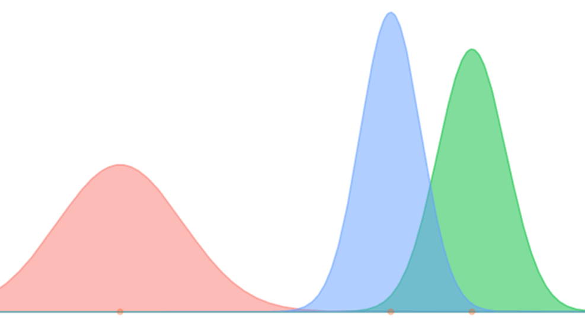

This section focuses on some key ideas to help you quickly get into the Bayesian mindset. Again, very little statistical knowledge is assumed. If you have prior experience with the Bayesian approach it may be skipped.

One of the first things to get used to coming from a traditional framework is that the focus is on distributions of parameters rather than single estimates of them. In the Bayesian context, parameters are random, not fixed. Your analysis will start with one distribution, the prior, and end with another, the posterior. The summaries of that distribution, e.g. the mean, standard deviation, etc. will be available, and thus be used to understand the parameters in similar fashion as the traditional approach.
As an example, if you want to estimate a regression coefficient, the Bayesian analysis will result in hundreds to thousands of values from the distribution for that coefficient. You can then use those values to obtain their mean, or use the quantiles to provide an interval estimate, and thus end up with the same type of information.
Consider the following example. We obtain a 1000 draws from a normal distribution with mean 5 and standard deviation of 2. From those values we can get the mean or an interval estimate.
coef_result = rnorm(1000, 5, 2)
head(coef_result)[1] 5.203338 6.058071 5.625163 4.953141 5.409085 5.688466mean(coef_result)[1] 5.012898sd(coef_result)[1] 1.912302quantile(coef_result, c(.025,.975)) 2.5% 97.5%
1.232427 8.828783 You will end up specifying the nature of that distribution depending on the model and goals of your situation, but the concept will be no different.
For the Bayesian approach we must choose a prior distribution representing our initial beliefs about the estimate. This is traditionally where some specifically have difficulty with Bayesian estimation, and newcomers are most wary. You will have to make choices here, but they are no different than the sort of choices you’ve always made in statistical modeling. Perhaps you let the program do it for you (generally a bad idea), or put little thought into it (also a bad idea), but such choices were always there. Examples include which variables go into the model, the nature of the likelihood (e.g. normal vs. Poisson), whether to include interactions, etc. You’re always making these choices in statistical modeling. Always. If it didn’t bother you before it needn’t now.
The prior’s settings are typically based on modeling concerns. As an example, the prior for regression coefficients could be set to uniform with some common sense boundaries. This would more or less defeat the purpose of the Bayesian approach, but it represents a situation in which we are completely ignorant of the situation. In fact, doing so would produce the results from standard likelihood regression approaches, and thus you can think of your familiar approach as a Bayesian one with uninformed priors. However, more common practice usually sets the prior for a regression coefficient to be normal, with mean at zero and with a relatively large variance. The large variance reflects our ignorance, but using the normal results in nicer estimation properties. The really nice thing is however, that we could have set the mean to that seen for the same or similar situations in prior research. In this case we can build upon the work that came before.
Setting aside the fact that such ‘subjectivity’ is an inherent part of the scientific process, and that ignoring prior information, if explicitly available from previous research, would be blatantly unscientific, the main point to make here is that this choice is not an arbitrary one. There are many distributions we might work with, but some will be better for us than others. And we can always test different priors to see how they might affect results (if at all)2 Such testing is referred to as sensitivity analysis..
I won’t say too much about the likelihood function here. I have a refresher in the appendix of the Bayesian Basics doc. In any case here is a brief example. We’ll create a likelihood function for a standard regression setting, and compare results for two estimation situations.
# likelihood function
reg_ll = function(X, y, beta, sigma){
sum(dnorm(y, mean=X%*%beta, sd=sigma, log=T))
}
# true values
true_beta = c(2,5)
true_sigma = 1
# comparison values
other_beta = c(0,3)
other_sigma = 2
# sample size
N = 1000
# data generation
X = cbind(1, runif(N))
y = X %*% true_beta + rnorm(N, sd=true_sigma)
# calculate likelihooods
reg_ll(X, y, beta=true_beta, sigma=true_sigma) # more likely[1] -1430.089reg_ll(X, y, beta=other_beta, sigma=other_sigma) # less likely[1] -2925.993logLik(lm(y~., data=data.frame(X[,-1]))) # actual log likelihood'log Lik.' -1429.868 (df=3)The above demonstrates a couple things. The likelihood tells us the relative number of ways the data could occur given the parameter estimates. For a standard linear model where the likelihood is based on a normal distribution, we require estimates for the coefficients and the variance/standard deviation. In the standard maximum likelihood (ML) approach commonly used in statistical analysis, we use an iterative process to end up with estimates of the parameters that maximize the data likelihood. With more data, and a lot of other considerations going in our favor, we end up closer to the true values3 Assuming such a thing exists.. A key difference from standard ML methods and the Bayesian approach is that the former assumes a fixed parameter, while the Bayesian approach assumes the parameter is random.
The posterior distribution is a weighted combination of the prior and the likelihood, and is proportional to their product. Assuming some \(\theta\) is the parameter of interest:
\[ p(\theta|Data) \propto p(Data|\theta) \cdot p(\theta) \] \[ \;\;\mathrm{posterior} \;\propto \mathrm{likelihood} \;\!\cdot \mathrm{prior} \] With more data, i.e. evidence, the weight shifts ever more to the likelihood, ultimately rendering the prior inconsequential. Let’s now see this in action.
One of the many nice things about the Bayesian approach regards the probabilities and intervals we obtain, specifically their interpretation. For some of you still new to statistical analysis in general, this may be the interpretation you were already using, though incorrectly.
As an example, the p-value from standard null hypothesis testing goes something like the following:
If the null hypothesis is true, the probability of seeing a result like this or more extreme is P.
Contrast this with the following:
The probability of this result being different from zero is P.
Which is more straightforward? Now consider the interval estimates:
If I repeat this study precisely an infinite number of times, and I calculate a P% interval each time, then P% of those intervals will contain the true parameter.
Or:
P is the probability the parameter falls in this interval.
One of these reflects the notions and language we use in everyday speech, the other hasn’t been understood very well by most people practicing science. While oftentimes, and especially for simpler models, a Bayesian interval will not be much different than the traditional one, at least it will be something you could describe to the average Joe on the street. In addition, you can generate distributions, and thus estimates with corresponding intervals, for anything you can calculate based on the model. Such statistics are a natural by-product of the approach, and make it easier to explore your data further.